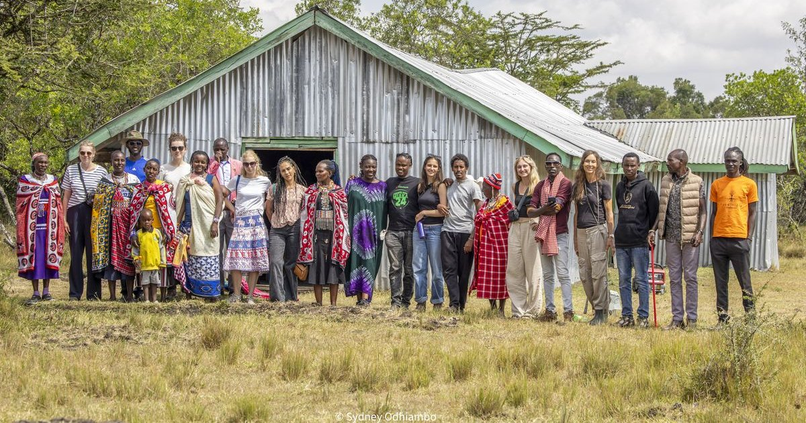

KVSO Kenya
A website for a Kenyan volunteering organisation that promotes peace, global citizenship and community development. It includes long-form field reports (Kakamega Forest, Maasai Mara, Thimlich, Tsavo), a heritage programme, a photo gallery, and a Git-based CMS so staff can publish articles and photos themselves.
Visit kvsokenya.org